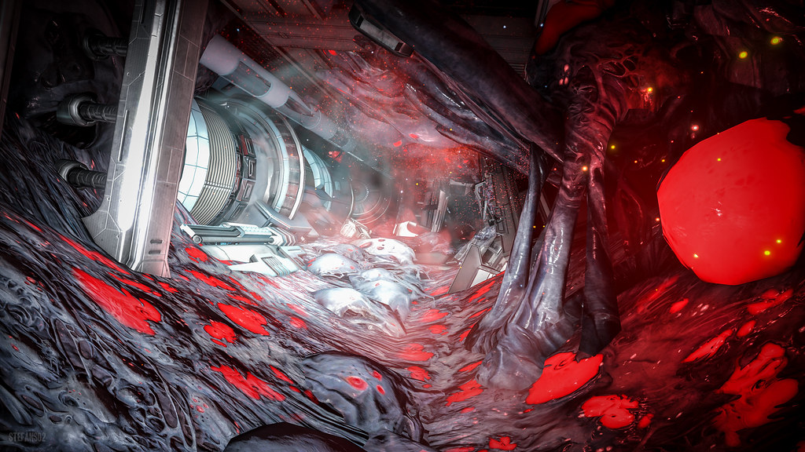

Warframe drops you into a far‑future solar system where ancient warriors called Tenno awaken from centuries of sleep and find themselves in the middle of a sprawling interplanetary conflict. You play as one of these Tenno, piloting biomechanical suits known as Warframes—each with its own unique abilities, combat style, and personality. The game blends fast, acrobatic movement with cooperative missions, deep customization, and an ever‑expanding storyline that mixes sci‑fi mystery, space‑opera drama, and stylish action. It's a world built to evolve, constantly adding new quests, characters, and planets to explore.
Warframe stands out because it delivers a mix of speed, style, and freedom that few other action games manage. Its movement system feels almost acrobatic, letting players sprint across walls, slide through corridors, and chain abilities in a way that makes every mission feel dynamic. The constant stream of new Warframes, weapons, quests, and open‑world zones keeps the game feeling alive, and the fact that nearly everything can be earned through gameplay makes it welcoming rather than predatory. Players stick with it because it rewards experimentation, offers deep customization, and has a community that genuinely celebrates creativity and mastery. You can play Warframe on PC, PlayStation 4 & 5, Xbox One, Xbox Series X|S, and Nintendo Switch, with cross‑platform play available so friends can squad up no matter the system.
Note: Please update image attributions with correct owner, source site, and license information (e.g., Creative Commons BY, CC0 Public Domain, etc.)